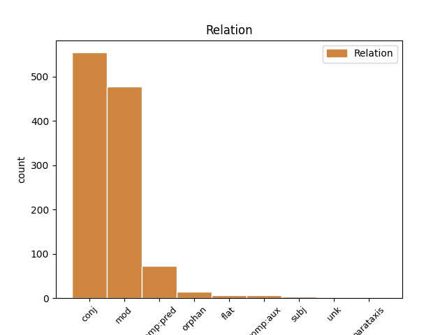
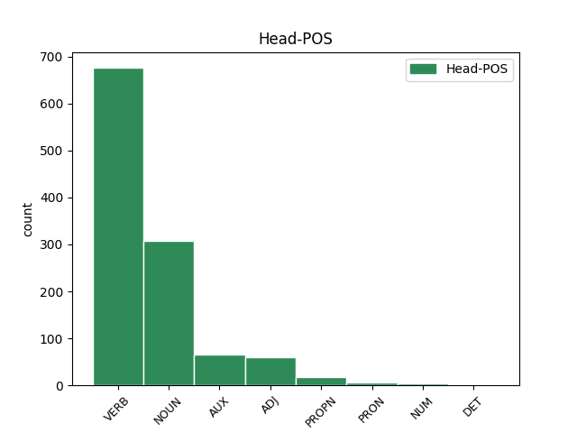
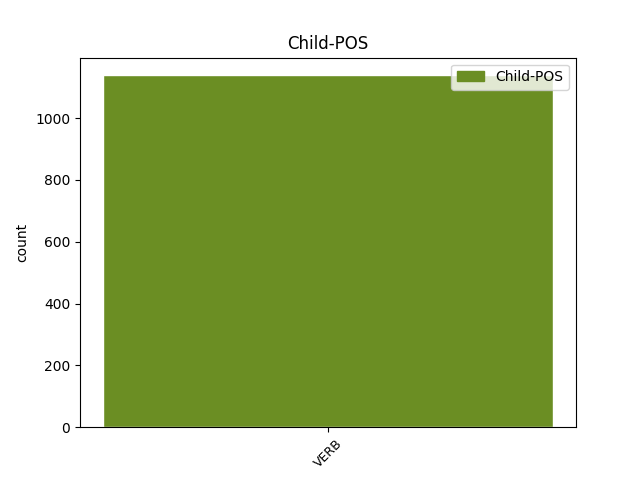

Distribution of features within this leaf



Agreement Rules sorted by frequency.
- When the dependent token is the conjunct(conj) of the head token, and the dependent token is VERB.
1 Не _ _ _ _ 0 _ _ _
2 мало _ _ _ _ 0 _ _ _
3 ти _ _ _ _ 0 _ _ _
4 величія _ _ _ _ 0 _ _ _
5 лелѣявшу _ _ _ _ 0 _ _ _
6 князя _ _ _ _ 0 _ _ _
7 на _ _ _ _ 0 _ _ _
8 влънах _ _ _ _ 0 _ _ _
9 стлавшу стьлати VERB V- Case=Dat|Gender=Masc|Number=Sing|Strength=Strong|Tense=Past|VerbForm=Part|Voice=Act 0 _ _ _
10 ему _ _ _ _ 0 _ _ _
11 зелѣну _ _ _ _ 0 _ _ _
12 траву _ _ _ _ 0 _ _ _
13 на _ _ _ _ 0 _ _ _
14 своихъ _ _ _ _ 0 _ _ _
15 сребреныхъ _ _ _ _ 0 _ _ _
16 брезѣхъ _ _ _ _ 0 _ _ _
17 одѣвавшу одѣвати VERB V- Case=Dat|Gender=Masc|Number=Sing|Strength=Strong|Tense=Past|VerbForm=Part|Voice=Act 9 conj _ ref=195
18 его _ _ _ _ 0 _ _ _
19 теплыми _ _ _ _ 0 _ _ _
20 мъглами _ _ _ _ 0 _ _ _
21 подъ _ _ _ _ 0 _ _ _
22 сѣнію _ _ _ _ 0 _ _ _
23 зелену _ _ _ _ 0 _ _ _
24 древу _ _ _ _ 0 _ _ _
1 Здрави съдравыи ADJ A- Case=Nom|Degree=Pos|Gender=Masc|Number=Plur|Strength=Strong 0 _ _ _
2 князи _ _ _ _ 0 _ _ _
3 и _ _ _ _ 0 _ _ _
4 дружина _ _ _ _ 0 _ _ _
5 побарая побарати VERB V- Case=Nom|Gender=Masc|Number=Sing|Strength=Strong|Tense=Pres|VerbForm=Part|Voice=Act 1 mod _ ref=217
6 за _ _ _ _ 0 _ _ _
7 христьяны _ _ _ _ 0 _ _ _
8 на _ _ _ _ 0 _ _ _
9 поганыя _ _ _ _ 0 _ _ _
10 плъки _ _ _ _ 0 _ _ _
1 Чръна _ _ _ _ 0 _ _ _
2 земля _ _ _ _ 0 _ _ _
3 подъ _ _ _ _ 0 _ _ _
4 копыты _ _ _ _ 0 _ _ _
5 костьми _ _ _ _ 0 _ _ _
6 была быти AUX V- Aspect=Res|Case=Nom|Gender=Fem|Number=Sing|Strength=Strong|VerbForm=Part|Voice=Act 0 _ _ _
7 посѣяна посѣяти VERB V- Case=Nom|Gender=Fem|Number=Sing|Strength=Strong|Tense=Past|VerbForm=Part|Voice=Pass 6 comp:pred _ ref=67
8 а _ _ _ _ 0 _ _ _
9 кровію _ _ _ _ 0 _ _ _
10 польяна _ _ _ _ 0 _ _ _
1 и _ _ _ _ 0 _ _ _
2 тако _ _ _ _ 0 _ _ _
3 пакы _ _ _ _ 0 _ _ _
4 блаженыи _ _ _ _ 0 _ _ _
5 приде _ _ _ _ 0 _ _ _
6 въ _ _ _ _ 0 _ _ _
7 манастырь _ _ _ _ 0 _ _ _
8 свои _ _ _ _ 0 _ _ _
9 ꙗко _ _ _ _ 0 _ _ _
10 храбъръ храбрыи ADJ A- Case=Nom|Degree=Pos|Gender=Masc|Number=Sing|Strength=Strong 0 _ _ _
11 сильнъ _ _ _ _ 0 _ _ _
12 побѣдивъ побѣдити VERB V- Case=Nom|Gender=Masc|Number=Sing|Strength=Strong|Tense=Past|VerbForm=Part|Voice=Act 10 orphan _ ref=45
13 зълыꙗ _ _ _ _ 0 _ _ _
14 дх҃ы _ _ _ _ 0 _ _ _
15 пакостьствѹюща _ _ _ _ 0 _ _ _
16 въ _ _ _ _ 0 _ _ _
17 области _ _ _ _ 0 _ _ _
18 ѥго _ _ _ _ 0 _ _ _
1 единъ _ _ _ _ 0 _ _ _
2 токмо _ _ _ _ 0 _ _ _
3 зеновьꙗнин _ _ _ _ 0 _ _ _
4 к҃нзь _ _ _ _ 0 _ _ _
5 именем _ _ _ _ 0 _ _ _
6 зꙋстѣнїа _ _ _ _ 0 _ _ _
7 прїиде _ _ _ _ 0 _ _ _
8 къ _ _ _ _ 0 _ _ _
9 ц҃рю _ _ _ _ 0 _ _ _
10 на _ _ _ _ 0 _ _ _
11 помощь _ _ _ _ 0 _ _ _
12 на _ _ _ _ 0 _ _ _
13 двоу _ _ _ _ 0 _ _ _
14 кораблѣх _ _ _ _ 0 _ _ _
15 и _ _ _ _ 0 _ _ _
16 на _ _ _ _ 0 _ _ _
17 двоу _ _ _ _ 0 _ _ _
18 катаргахъ _ _ _ _ 0 _ _ _
19 въ въоружити VERB V- Case=Loc|Gender=Fem|Number=Plur|Strength=Weak|Tense=Past|VerbForm=Part|Voice=Pass 0 _ _ _
20 ѡрꙋженых ѡрꙋженых VERB V- Case=Loc|Gender=Fem|Number=Plur|Strength=Weak|Tense=Past|VerbForm=Part|Voice=Pass 19 flat _ ref=292r22
21 имѣѧ _ _ _ _ 0 _ _ _
22 сʼ _ _ _ _ 0 _ _ _
23 собою _ _ _ _ 0 _ _ _
24 х҃ _ _ _ _ 0 _ _ _
25 храбрых _ _ _ _ 0 _ _ _
1 а _ _ _ _ 0 _ _ _
2 затѣмь _ _ _ _ 0 _ _ _
3 аче _ _ _ _ 0 _ _ _
4 и _ _ _ _ 0 _ _ _
5 кдѣ _ _ _ _ 0 _ _ _
6 налѣзеть _ _ _ _ 0 _ _ _
7 ѹдареныи _ _ _ _ 0 _ _ _
8 тъ _ _ _ _ 0 _ _ _
9 своѥго _ _ _ _ 0 _ _ _
10 истьцѧ _ _ _ _ 0 _ _ _
11 кто _ _ _ _ 0 _ _ _
12 ѥго _ _ _ _ 0 _ _ _
13 ѹдарилъ _ _ _ _ 0 _ _ _
14 то _ _ _ _ 0 _ _ _
15 ꙗрославъ _ _ _ _ 0 _ _ _
16 былъ быти AUX V- Aspect=Res|Case=Nom|Gender=Masc|Number=Sing|Strength=Strong|VerbForm=Part|Voice=Act 0 _ _ _
17 ѹставилъ уставити VERB V- Aspect=Res|Case=Nom|Gender=Masc|Number=Sing|Strength=Strong|VerbForm=Part|Voice=Act 16 comp:aux _ ref=65
18 ѹбити _ _ _ _ 0 _ _ _
19 и _ _ _ _ 0 _ _ _
1 аще _ _ _ _ 0 _ _ _
2 бо _ _ _ _ 0 _ _ _
3 реч _ _ _ _ 0 _ _ _
4 не _ _ _ _ 0 _ _ _
5 г҃ь _ _ _ _ 0 _ _ _
6 ли _ _ _ _ 0 _ _ _
7 хранить _ _ _ _ 0 _ _ _
8 града _ _ _ _ 0 _ _ _
9 всоуе _ _ _ _ 0 _ _ _
10 бʼдѧ бъдѣти VERB V- Case=Nom|Gender=Masc|Number=Sing|Strength=Strong|Tense=Pres|VerbForm=Part|Voice=Act 0 _ _ _
11 стрегїи стрѣщи VERB V- Case=Nom|Gender=Masc|Number=Plur|Strength=Weak|Tense=Past|VerbForm=Part|Voice=Act 10 subj _ ref=314r8
1 и _ _ _ _ 0 _ _ _
2 ѡнъ _ _ _ _ 0 _ _ _
3 еще _ _ _ _ 0 _ _ _
4 прибавилъ прибавити VERB V- Aspect=Res|Case=Nom|Gender=Masc|Number=Sing|Strength=Strong|VerbForm=Part|Voice=Act 0 _ _ _
5 мало _ _ _ _ 0 _ _ _
6 вышло выити VERB V- Aspect=Res|Case=Nom|Gender=Neut|Number=Sing|Strength=Strong|VerbForm=Part|Voice=Act 4 parataxis _ ref=22
7 с _ _ _ _ 0 _ _ _
8 нимъ _ _ _ _ 0 _ _ _
9 к҃ _ _ _ _ 0 _ _ _
10 тысѧч _ _ _ _ 0 _ _ _
11 пѣших _ _ _ _ 0 _ _ _
12 людеи _ _ _ _ 0 _ _ _
13 двѣ _ _ _ _ 0 _ _ _
14 тысѧч _ _ _ _ 0 _ _ _
15 конных _ _ _ _ 0 _ _ _
16 людеи _ _ _ _ 0 _ _ _
17 да _ _ _ _ 0 _ _ _
18 к҃ _ _ _ _ 0 _ _ _
19 слоновъ _ _ _ _ 0 _ _ _
Disagree Examples:
1 и _ _ _ _ 0 _ _ _
2 билъ _ _ _ _ 0 _ _ _
3 есми _ _ _ _ 0 _ _ _
4 челѡм _ _ _ _ 0 _ _ _
5 василью _ _ _ _ 0 _ _ _
6 папинѹ _ _ _ _ 0 _ _ _
7 да _ _ _ _ 0 _ _ _
8 послѹ _ _ _ _ 0 _ _ _
9 ширвашинѹ _ _ _ _ 0 _ _ _
10 асан _ _ _ _ 0 _ _ _
11 бегѹ _ _ _ _ 0 _ _ _
12 что _ _ _ _ 0 _ _ _
13 есмѧ _ _ _ _ 0 _ _ _
14 с _ _ _ _ 0 _ _ _
15 нимъ _ _ _ _ 0 _ _ _
16 пришли _ _ _ _ 0 _ _ _
17 чтобы _ _ _ _ 0 _ _ _
18 сѧ _ _ _ _ 0 _ _ _
19 печаловалъ _ _ _ _ 0 _ _ _
20 ѡ _ _ _ _ 0 _ _ _
21 людех людие NOUN Nb Case=Loc|Gender=Masc|Number=Plur 0 _ _ _
22 что _ _ _ _ 0 _ _ _
23 их _ _ _ _ 0 _ _ _
24 поимали поимати VERB V- Aspect=Res|Case=Nom|Gender=Masc|Number=Plur|Strength=Strong|VerbForm=Part|Voice=Act 21 mod _ ref=4
25 под _ _ _ _ 0 _ _ _
26 тархы _ _ _ _ 0 _ _ _
27 каитаки _ _ _ _ 0 _ _ _
1 чюнеръ _ _ _ _ 0 _ _ _
2 же _ _ _ _ 0 _ _ _
3 град _ _ _ _ 0 _ _ _
4 есть _ _ _ _ 0 _ _ _
5 на _ _ _ _ 0 _ _ _
6 ѡстровꙋ островъ NOUN Nb Case=Loc|Gender=Masc|Number=Sing 0 _ _ _
7 на _ _ _ _ 0 _ _ _
8 каменомъ _ _ _ _ 0 _ _ _
9 не _ _ _ _ 0 _ _ _
10 дѣланъ дѣлати VERB V- Case=Nom|Gender=Masc|Number=Sing|Strength=Strong|Tense=Past|VerbForm=Part|Voice=Pass 6 mod _ ref=7
11 ничим _ _ _ _ 0 _ _ _
12 бг҃мь _ _ _ _ 0 _ _ _
13 сътворенъ _ _ _ _ 0 _ _ _
1 ві҃ _ _ _ _ 0 _ _ _
2 рѣзано _ _ _ _ 0 _ _ _
3 вѣнцевъ вѣньць NOUN Nb Case=Gen|Gender=Masc|Number=Plur 0 _ _ _
4 какъ _ _ _ _ 0 _ _ _
5 бѹтъ _ _ _ _ 0 _ _ _
6 чюдеса _ _ _ _ 0 _ _ _
7 творил творити VERB V- Aspect=Res|Case=Nom|Gender=Masc|Number=Sing|Strength=Strong|VerbForm=Part|Voice=Act 3 mod _ ref=12
8 какъ _ _ _ _ 0 _ _ _
9 сѧ _ _ _ _ 0 _ _ _
10 имъ _ _ _ _ 0 _ _ _
11 ꙗвлѧлъ _ _ _ _ 0 _ _ _
12 многыми _ _ _ _ 0 _ _ _
13 ѡбразы _ _ _ _ 0 _ _ _
1 да _ _ _ _ 0 _ _ _
2 молил _ _ _ _ 0 _ _ _
3 сѧ _ _ _ _ 0 _ _ _
4 есми _ _ _ _ 0 _ _ _
5 бг҃ѹ богъ NOUN Nb Case=Dat|Gender=Masc|Number=Sing 0 _ _ _
6 вседержителю _ _ _ _ 0 _ _ _
7 кто _ _ _ _ 0 _ _ _
8 сътворилъ сътворити VERB V- Aspect=Res|Case=Nom|Gender=Masc|Number=Sing|Strength=Strong|VerbForm=Part|Voice=Act 5 mod _ ref=14
9 нб҃о _ _ _ _ 0 _ _ _
10 и _ _ _ _ 0 _ _ _
11 землю _ _ _ _ 0 _ _ _
1 меликтѹчаръ _ _ _ _ 0 _ _ _
2 два _ _ _ _ 0 _ _ _
3 города городъ NOUN Nb Case=Acc|Gender=Masc|Number=Dual 0 _ _ _
4 взѧл _ _ _ _ 0 _ _ _
5 индѣискыѧ _ _ _ _ 0 _ _ _
6 что _ _ _ _ 0 _ _ _
7 розбивали розбивати VERB V- Aspect=Res|Case=Nom|Gender=Masc|Number=Plur|Strength=Strong|VerbForm=Part|Voice=Act 3 mod _ ref=22
8 по _ _ _ _ 0 _ _ _
9 морю _ _ _ _ 0 _ _ _
10 индѣискомѹ _ _ _ _ 0 _ _ _